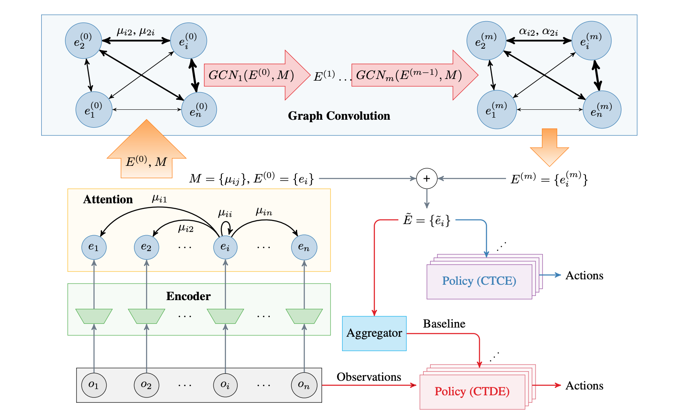
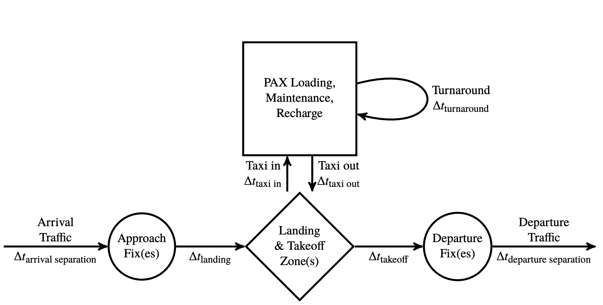
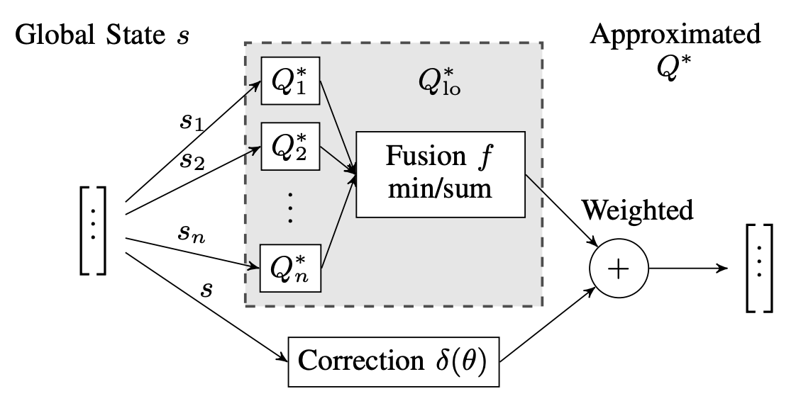

2022
Stanford University
PhD, Aeronautics & Astronautics
Multi-agent reinforcement learning at Stanford Intelligent Systems Laboratory.
Multi-agent intelligence · Stanford
I’m Sheng Li, a Stanford Aero/Astro PhD exploring the structure of multi-agent cooperation—how agents communicate, coordinate, and make safer decisions together.
About
Structure before scale
At Stanford Intelligent Systems Laboratory, I studied cooperation and coordination from a structural perspective: learning who should communicate, what should be said, and how a group can act as more than a collection of individuals.
My earlier work applied reinforcement learning to aircraft collision avoidance and urban air mobility—domains where coordination is not just elegant, but essential for safety.
Stanford University
Multi-agent reinforcement learning at Stanford Intelligent Systems Laboratory.
Stanford University
Autonomous systems, decision making, and airspace safety.
Michigan × SJTU
Aerospace Engineering and Mechanical Engineering.
Selected research
Systems that think together
From learned language to dense airspace, each project asks how local decisions can create intelligent collective behavior.
 01
01
Agents learn a compact, interpretable vocabulary through a broadcast-and-listen mechanism—with a path for humans to join the conversation.
Open project ↗
02A dynamic graph structure that learns which agent interactions matter, balancing centralized reasoning with decentralized action.
Open project ↗
03 Best paperSimulation-driven analysis of fleet, infrastructure, and traffic policies for scalable on-demand urban air mobility.
Open project ↗
04Deep reinforcement learning corrections help traditional avoidance systems maintain safety while operating more efficiently at high traffic density.
Open project ↗More experiments in autonomous driving, uncertainty, perception, and distributed learning.
View the complete project archive ↗Publications
Peer-reviewed ideas
Beyond the lab
Light · place · patience
Away from algorithms, I photograph landscapes and cities—waiting for scale, motion, and light to briefly align.
Follow the visual journal ↗Open channel
Research, intelligent systems, ambitious ideas—or a great place to take a photograph.
lisheng@stanford.edu ↗